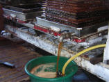

La Ferme de La Godinière
27410
Le Noyer en Ouche
dernière mise à jour de cette page : 22.10.2009
Notre ancienne adresse web :cidre.rene.lesur.club.fr est
devenue obsolète et est
transférée sur
http://pagesperso-orange.fr/lagodiniere27/
La Fabrication du
Cidre
à la Ferme de la
Godinière
Suite de la page précédente : La Fabrication
du Cidre
Arrivée et lavage des pommes
|
Râpage et cuvage de la pulpe
Les pommes ainsi râpées tombent dans le bac de cuvage (conquet). |
Pressurage et mise en cuve
|
La pulpe de la pomme - appelée marc de pomme est pressée pour en extraire le jus que l'on appelle le moût. C'est le pressurage. Il existe différentes sortes de pressoirs. |
|
|
|
Les
plus anciens étaient en bois et étaient très imposants de par leurs
dimensions - tels le pressoir à longue étreinte - ou plus modestes, avec
une vis placée au centre du tablier ou faisselle. Le marc était à l'origine monté par couches successives alternées par une couche de paille qui servait à le maintenir et drainait le jus pendant le pressage. Ensuite la paille à été remplacée par des cages carrées ou rondes. Plus tard sont apparues des machines actionnées par des tracteurs qui ont remplacé les machines à vapeur, pour en arriver à notre époque à des pressoirs modernes complètement automatisés. Le moût de pomme est ensuite envoyé dans des cuves à l'aide d'une pompe. |
|
Autrefois dans les rues de Bernay... |
|
| A La Ferme de La Godinière, nous utilisons une ancienne presse J.SAMBRON 62 Tonnes - soit une pression sur les marcs de 10 Kg/cm² - à maies tournantes qui date des années 50. Elle a subi de nombreuses modifications au fil du temps, plateaux Inox, moteur électrique, La râpe d'origine n'est plus utilisée pour permettre le cuvage. |
 |
Suite : La Fabrication du Cidre à la Ferme de la Godinière
|
Retour
Les Produits
ou
Accueil ou
Plan du
site |
En Savoir plus sur :
Ecrivez nous pour donner votre impression et votre suggestion, merci.
Ma messagerie est protégée par Avast
Conception et Réalisation : René Lesur